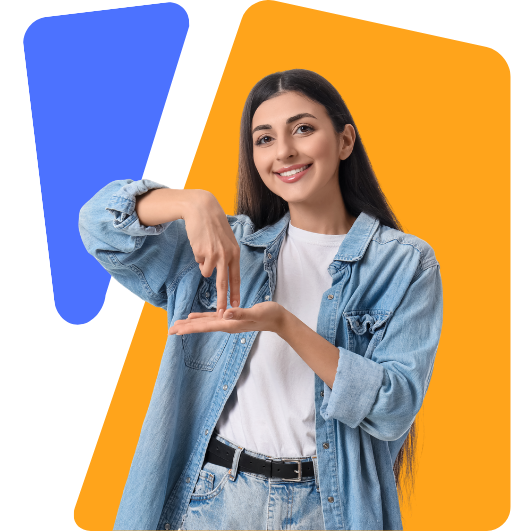
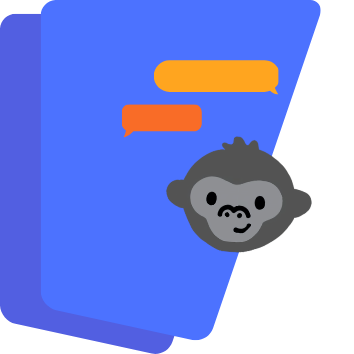
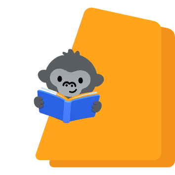
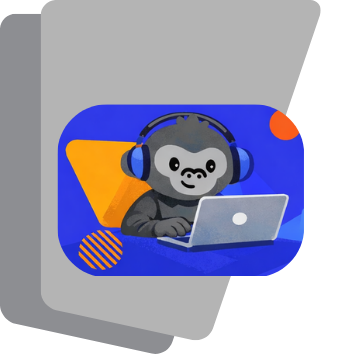

Welcome to
Koko´s talk
Domina la lengua de señas salvadoreña (LESSA) en una plataforma dinámica y obtén una certificación oficial que valide tus habilidades profesionales.

¿Quiénes somos?
Somos KoKo's Talk Group, un equipo multidisciplinario de educadores, lingüistas, desarrolladores y líderes sordos salvadoreños. Nuestra misión nace de una convicción profunda: la comunicación inclusiva es un puente que transforma sociedades y enriquece a las profesiones.
Somos facilitadores de conexión. Creemos que aprender LESSA debe ser tan dinámico, accesible y valioso como cualquier otra habilidad profesional.
Nuestras metodologías
Aprendizaje Inmersivo & Gamificado
Módulos Interactivos: Videos con instructores sordos nativos, juegos de memoria y vocabulario dinámico que hacen del aprendizaje una experiencia divertida y efectiva.
Camino hacia la Certificación Oficial
- Rutas de Aprendizaje: Diseñadas para distintos niveles (Básico, Social, Profesional).
- Evaluaciones Prácticas: Exámenes mediante video-llamada con evaluadores certificados de la comunidad sorda.
Beneficios e Impactos

Impacto social
Estamos haciendo algo más que enseñar una lengua. Estamos devolviendo a las familias salvadoreñas el sonido más importante: el de su propia conexión.
Construimos puentes de comunicación que fortalecen los lazos familiares y comunitarios.
Impacto profesional
Aumenta tu empleabilidad, presta un servicio más humano (salud, educación, retail) y amplía tu red de contactos.
Dominar una segunda lengua (incluyendo lengua de señas) te abre puertas en el mercado laboral y te permite ofrecer una atención inclusiva y de calidad.


Impacto Empresarial
Implementamos planes para certificar equipos, cumplir con accesibilidad y construir entornos laborales genuinamente inclusivos.
Las empresas que invierten en accesibilidad no solo cumplen con normativas, sino que ganan en productividad y reputación.
Lo que dicen nuestros estudiantes

María González
"Koko's Talk transformó mi carrera como enfermera. Ahora puedo comunicarme con mis pacientes sordos de manera natural y empática. La metodología es increíblemente efectiva."

Carlos Mendoza
"Nunca pensé que aprender LESSA sería tan divertido. Los juegos y videos interactivos hacen que cada lección sea emocionante. ¡Ya estoy en el nivel avanzado!"

Ana Rivera
"Como docente, esta plataforma me dio las herramientas para incluir a todos mis estudiantes. La certificación oficial me abrió puertas en instituciones educativas."
Planes de Suscripción
Gratis
- Acceso a 2 lecciones
- Juegos de vocabulario
- Soporte por email
- Certificaciones oficiales
Basic
- Todo el plan Básico
- Módulos de básico a intermedio
- Certificaciones oficiales
- Acceso a Diccionario
Premium
- Todo el plan Pro
- Acceso a cursos especializados
- Módulos de básico a avanzado
- Acceso a Diccionario
- Certificaciones oficiales
Preguntas Frecuentes
El tiempo varía según tu dedicación y nivel objetivo. Con 30 minutos diarios, puedes alcanzar el nivel básico en 3 meses. Para la certificación profesional completa, el promedio es de 8-12 meses de estudio consistente.
Sí, nuestra certificación es avalada por la Asociación Salvadoreña de Sordos (ASS) y el Ministerio de Educación de El Salvador. Es válida para fines laborales y académicos en todo el territorio nacional.
No es necesario. Nuestro programa está diseñado desde cero, con rutas de aprendizaje que se adaptan a principiantes absolutos hasta usuarios avanzados que buscan perfeccionamiento profesional.
Absolutamente. Koko's Talk es 100% responsive y funciona perfectamente en dispositivos móviles, tablets y computadoras. También contamos con app nativa para iOS y Android con modo offline.
Sí, tienes 14 días de garantía desde tu primera suscripción. Si sientes que la plataforma no es para ti, te devolvemos el 100% de tu dinero sin hacer preguntas.